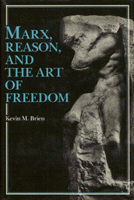

A systematic exploration of the problem of freedom in Marx
A systematic exploration of the problem of freedom in Marx


 A systematic exploration of the problem of freedom in Marx
A systematic exploration of the problem of freedom in Marx

|  |
Marx, Reason, and the Art of FreedomKevin M. Briencloth EAN: 978-0-87722-466-2 (ISBN: 0-87722-466-8) |
Here is the first philosophically systematic exploration of the problem of freedom in Marx. Emphasizing the scientific dimension of Marx�s mature method of explanation, Brien develops a philosophical reconstruction of Marx that draws on the full spectrum of his thoughts from its earliest to its latest stages. He addresses the problems involved in reconciling the deterministic elements of Marxism with the ideals of freedom.
Brien provides a sketch of Marx�s view of human reality, analyzes Marx�s mature method of dialectical explanation, and provides his own dialectical presentation of the problem of freedom under three categories: freedom as transcendence, freedom as mode of being, and freedom as spontaneity.
This book suggests a fresh reading of Marx, one capable of integrating the early and late works, reconciling the "scientific" and the "critical" dimensions of his thought, and accounting for the long problematic status of freedom in his philosophy It also brings out the philosophical continuity between Marx and Engels.
Kevin M. Brien is Assistant Professor of Philosophy at Washington College in Maryland.
© 2015 Temple University. All Rights Reserved. This page: http://www.temple.edu/tempress/titles/469_reg.html.